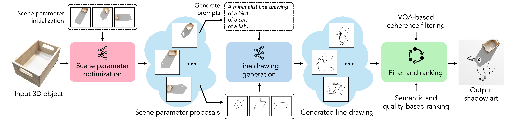
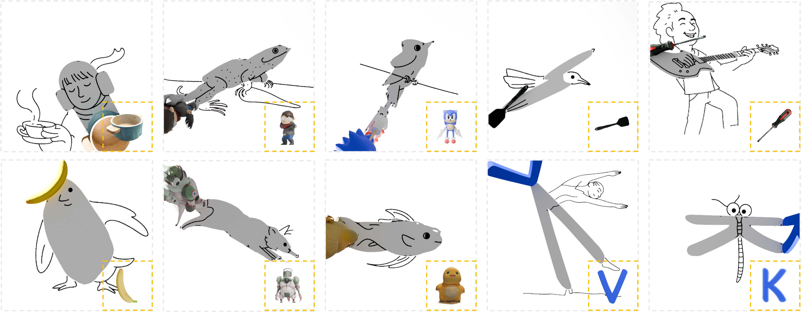

Abstract
We introduce ShadowDraw, a framework that transforms ordinary 3D objects into shadow-drawing compositional art. Given a 3D object, our system predicts scene parameters (including object pose and lighting) together with a partial line drawing, such that the cast shadow completes the drawing into a recognizable image. To this end, we optimize scene configurations to reveal meaningful shadows, employ shadow strokes to guide line drawing generation, and adopt automatic evaluation to enforce shadow-drawing coherence and visual quality. Experiments show that ShadowDraw produces compelling results across diverse inputs, from real-world scans and curated datasets to generative assets, and naturally extends to multi-object scenes, animations, and physical deployments. Our work provides a practical pipeline for creating shadow-drawing art and broadens the design space of computational visual art, bridging the gap between algorithmic design and artistic storytelling.
Framework

Framework overview. Given a 3D object, we first optimize scene parameters specifying the object pose and light configuration. From the rendered shadows, we derive text prompts with VLM and extract shadow strokes, which together condition the line drawing generator. The generated drawings are then filtered using a VQA-based coherence check and ranked by semantic and quality metrics. The final output is a partial line drawing along with scene parameters that, when rendered, form a coherent shadow-drawing composition.
Gallery
We showcase a collection of shadow-drawing compositions generated by our framework. Each composition is a result of a different scene configuration, including different object poses and light directions.

Real-world deployment
Because our method requires only a 3D object and a single spotlight, it can be easily reproduced in physical setups without specialized equipment. For instance, everyday household items combined with a phone flashlight suffice to create compelling shadow-drawing compositions.
One object, diverse results
Our framework by design generates multiple shadow-drawing compositions from the same real-world object. By varying the light direction, the object pose, and the underlying line drawing, we obtain a collection of artworks that highlight different aspects of the same object. This demonstrates how a single object can serve as the basis for a wide range of artistic expressions.
Multi-object compositions
Our framework naturally extends to scenes involving multiple objects. For each candidate configuration, we independently sample self-rotation angles, arrange the objects vertically, and release them in Blender's physics simulation to obtain a stable stacked layout. Once equilibrium is reached, the configuration is treated as a single composite object, allowing the rest of the pipeline to be applied directly. This enables more elaborate visual narratives where different objects contribute complementary shadow structures.
Animated objects
Our framework also supports animated objects without extra training. For each configuration, we render five key frames and overlay their shadow strokes into a single image, using distinct colors to denote frames. This composite is then fed to the VLM to generate the corresponding prompt. As in the static-object setting, we apply a binary mask to restrict stroke placement, defined as the intersection of all shadow regions and their neighborhoods, to avoid strokes in dynamically changing areas.